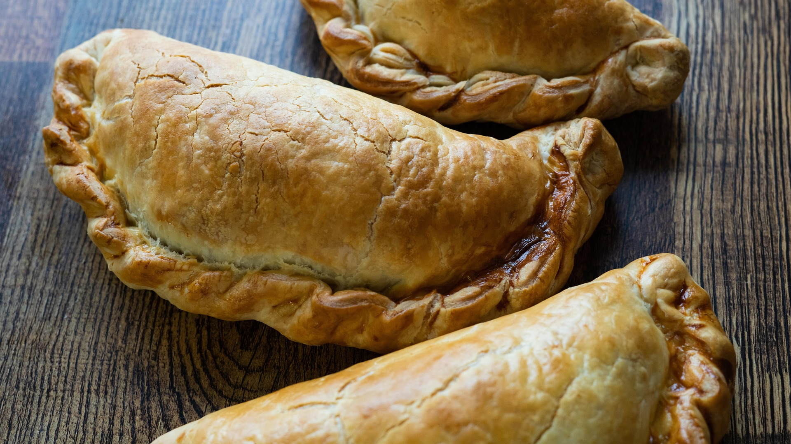
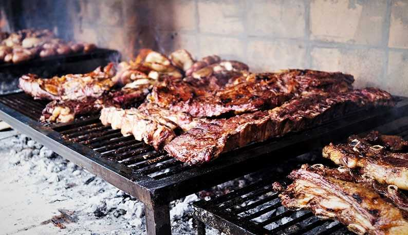

Empanadas

Descripción:
Ícono indiscutido de la gastronomía criolla, la empanada argentina es una fina masa de harina de trigo rellena, doblada en forma de medialuna y sellada con un característico borde trenzado llamado repulgue. Horneadas o fritas hasta lograr un dorado perfecto, combinan una textura crujiente por fuera con un interior jugoso y lleno de aroma.
Aunque el relleno clásico de carne vacuna cortada a cuchillo, cebolla, huevo duro, aceitunas y especias como el comino y el pimentón es el gran protagonista, cada provincia aporta su propio sello regional. Desde las jugosas empanadas tucumanas y las salteñas con papa, hasta opciones populares de jamón y queso, pollo o humita, este plato representa la calidez de la mesa argentina y el placer de compartir en familia o con amigos.
Ingredientes:
Para las tapas:
- Harina de trigo 000 o 0000, 500 gramos.
- Grasa vacuna o manteca, 100 gramos (derretida).
- Agua tibia, 200 ml aproximadamente.
- Sal fina.
Para el relleno:
- Carne vacuna: 500 gramos (nalga, bola de lomo o roast beef, cortada a cuchillo o picada).
- Cebolla blanca: 500 gramos, picada fina.
- Cebolla de verdeo: 2 o 3 tallos picados.
- Huevos duros: 2 o 3 unidades, picadas.
- Aceitunas verdes: 50 a 70 gramos, descarozadas y en rodajas.
- Grasa vacuna o aceite: 2 cucharadas para rehogar.
- Condimentos: sal, pimienta negra, comino molido, pimentón dulce y ají molido a gusto.
Video Explicativo:
Receta Empanadas
Asado

Descripción:
Más que una simple comida, el asado es el encuentro social más emblemático de Argentina y el máximo exponente de su tradición culinaria. Consiste en la cocción lenta de distintos cortes de carne vacuna a las brasas de leña o carbón sobre una parrilla, un arte dominado por la figura del asador.
El banquete suele comenzar con una picada previa seguida de achuras —como chorizos, morcillas, chinchulines y mollejas— acompañadas de pan y chimichurri o salsa criolla. Luego llegan los cortes principales, entre los que destacan el asado de tira, el vacío, la entraña y el bife de chorizo, servidos con ensaladas frescas y un buen vino malbec, celebrando la amistad y la sobremesa alrededor del fuego.
Ingredientes:
- Asado de tira (costillar vacuno): 1 kg.
- Vacío: 1 kg.
- Entraña o bife de chorizo: 500 gramos.
- Chorizos criollos: 4 unidades.
- Morcillas: 2 unidades.
- Achuras a elección (chinchulines, mollejas o riñones): 500 gramos.
- Sal parrillera (sal entrefina): a gusto.
- Salsa chimichurri (perejil, ajo, orégano, ají molido, vinagre y aceite): a gusto.
- Carbón vegetal o leña de quebracho para las brasas.
Video Explicativo:
Receta Asado
Pastelitos criollos
Descripción:
Ícono indiscutido de las celebraciones nacionales como el 25 de Mayo o el 9 de Julio, los pastelitos criollos son una joya de la repostería tradicional argentina. Se elaboran con una masa hojaldrada casera doblada en forma de estrella o flor, que al freírse se abre en decenas de capas sumamente crujientes.
En su interior guardan un corazón dulce y tibio, tradicionalmente de dulce de membrillo o dulce de batata. Una vez dorados, se bañan con un almíbar brillante y suelen decorarse con grageas de colores o coco rallado, convirtiéndose en el acompañamiento ideal para el mate de la tarde.
Ingredientes:
- Harina de trigo 0000: 500 gramos.
- Manteca o grasa vacuna (derretida y tibia): 100 gramos.
- Agua tibia: 200 ml aproximadamente.
- Sal fina: 1 pizca.
- Manteca o margarina (pomada, para el empaste): 100 gramos.
- Almidón de maíz (maicena): cantidad necesaria para espolvorear entre capas.
- Dulce de membrillo o dulce de batata: 300 gramos cortados en cubos.
- Aceite neutro o grasa vacuna: cantidad necesaria para freír.
- Azúcar y agua (en partes iguales): 200 gramos y 200 ml para hacer el almíbar.
- Grageas de colores o coco rallado: cantidad necesaria para decorar.
Video Explicativo:
Receta Pastelitos